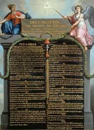

How well do you know the people and the events of the French Revolution?
Test your mettle in this short quiz
Get a (nearly worthless) assignat, the currency of the French Revolution, for each correct answer.
Get all 5 right for the grand prize!
In the Estates General that was called in 1789, which estate was made up of the bourgeoise, the peasants, and anyone else who was not a noble or a member of the clergy?
The Third Estate represented about 85% of France's population, but only 1/3 of the Estates General. This disproportionate representation would lead to the Third Estate working to increase it's political power and touch off the French Revolution and all it's unintended consequences.
The Third Estate represented all the French people who were not nobles (the First Estate) or clergy (Second Estate). There was no Fourth Estate.
Occuring on July 14, 1789, what was the first (but certainly not the last) violent insurgence by Parisian commoners during the early days of the French Revolution?
The Bastille had been mostly used as a prison after outliving it's usefulness as a defensive castle. It mostly held political prisoners of the king in it's history as a prison, and for that reason represented royal overreach. Although it was believed to be holding hundreds of prisoners in unspeakable misery by the rioting crowds, at the time of the storming and fall of the Bastille, there were in fact only 7 prisoners that were reasonably well taken care of. Still, the Bastille came to represent what the Revolution intended to fight against.
The Storming of the Bastille occurred on July 14, 1789. The Tennis Court Oath was non-violent and occurred as the Third Estate plotted to form their own assembly. The Thermidorian Reaction overthrew the Committee of Public Safety in 1795. The Massacre of the Champ de Mars occurred in 1791 during a confrontation over whether the king should remain under a constitutional monarchy or be stripped of all power right then.
Which French king went from absolutist monarch to figurehead monarch to being guillotined in just four short years as the Revolution rolled on?
Louis XVI was not up to the task of managing a debt crisis that blossomed into a revolution. Lacking the energy, will and ability to steer through difficult times, Louis' fate was to be stripped of power and then publically executed, ending the French monarchy that could trace its legacy all the way back to the Merovingian dynasty that began in 486 AD.
Louis XVI was the monarch that was executed via the guillotine, ending the French monarchy. Louis XV was Louis XIV's grand-father and the previous king of France. Louis Philippe was one of the many rulers to filter in and out of power in France in the long struggle for stability in the 1800s after the Revolution. Charles X was one of Louis XVI's younger brothers that ruled following the brief restoration of the Bourbon dynasty after Napoleon's capitulation.
Which Revolutionary leader took control of the Committee of Public Safety in the aftermath of the king's execution, overseeing the Reign of Terror?
Maximillien Robespierre was one of the many to come to sudden and unexpected prominence during the Revolution only to eventually be disgraced and guillotined. Robespierre, 'The Incorruptible', used his position within the Committee of Public Safety (the de facto ruling power in 1794-1795) to purge his enemies, particularly the conservatives that were furious that the King had been executed. The Reign of Terror saw thousands of people lose their heads not just in Paris, but all over the country, as Robespierre and his allies hoped to violently force the country to do things their way. Finally, he and his closest associates were themselves denounced and executed, and when the pieces were picked up, the Reign of Terror was over.
Maximillien Robespierre took control of the Committee of Public Safety and oversaw the Reign of Terror, of which he was one of its final victims. Georges Danton was also on the Committee of Public Safety, but lost out to Robespierre and lost his head as part of the Terror. Jean-Paul Marat was a close ally of Robespierre, but he was murdered by a woman named Charlotte Corday, who didn't like the radical direction of the Revolution she felt Marat was most responsible for. The Marquis de Lafayette was a noble originally sympathetic to the ideals of the Revolution, but had been languishing in a Austrian prison at the time of the Terror, which probably saved his life.
What institution ruled France during the time period (1795-1799) between the end of the Committee of Public Safety and Napoleon Bonaparte's ascension as the sole ruler (as Consul and, later, Emperor), which effectively ended the French Revolution?
the Directory ran the country mostly ineffectively in this period, desperately trying only to stay in power by constantly fending of attempts by both radicals and conservatives to take control. Increasingly, it relied on the army to help it control the population and institute its moderate course. In particular, it relied upon Napoleon Bonaparte, who began his career as a minor officer of little consequence but who piled up victories and honors before claiming a position as the sole ruler of France. Not as a king, but as a Consul, in the spirit of the old Roman Republic.
The Directory was in charge during this period between the radical Revolutionary period and the empire building (and collapsing) Napoleonic era. The National Assembly took over for the Estates General in 1789 after the Third Estate broke off to form it. The Legislative Assembly attempted to create a stable constitutional monarchy (which it was never able to do, thanks in large part to the agitation of the radical element of the Revolution). The Constitutional Convention was one of the governmental bodies formed during the American Revolution.
Congratulations! You got 5 questions correct!
You've won a copy of the Declaration of the Rights of Man, conceived by the Marquis de Lafayette and intended to be the basis of enlightened rule in post-Revolutionary France (of course, it was never actually used as such, but it's the thought that counts.)
